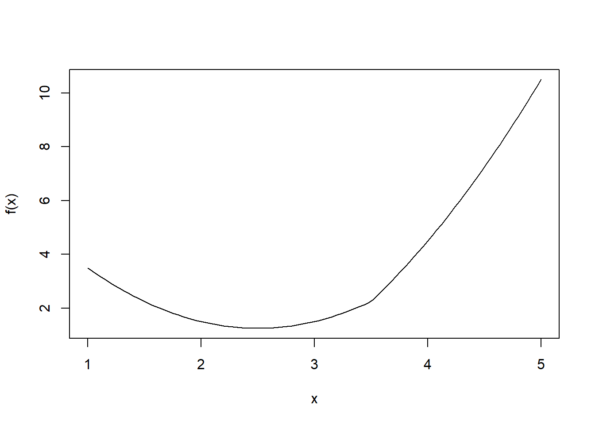
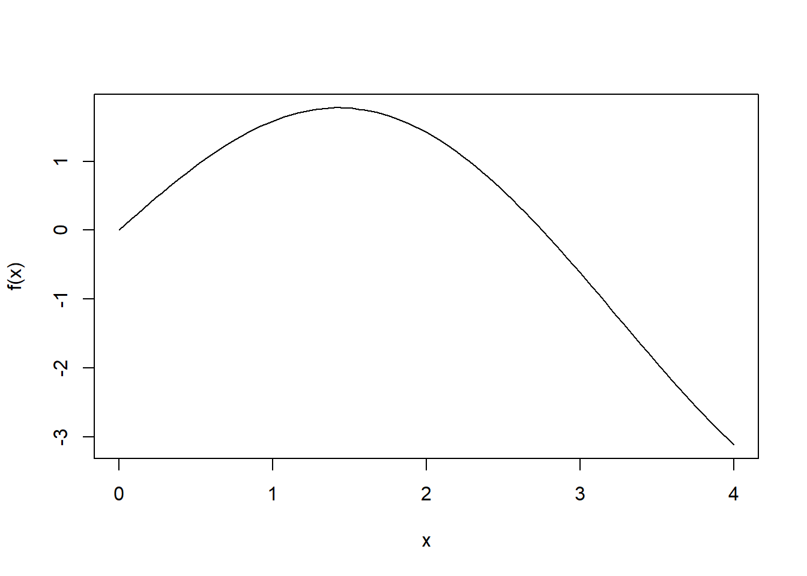
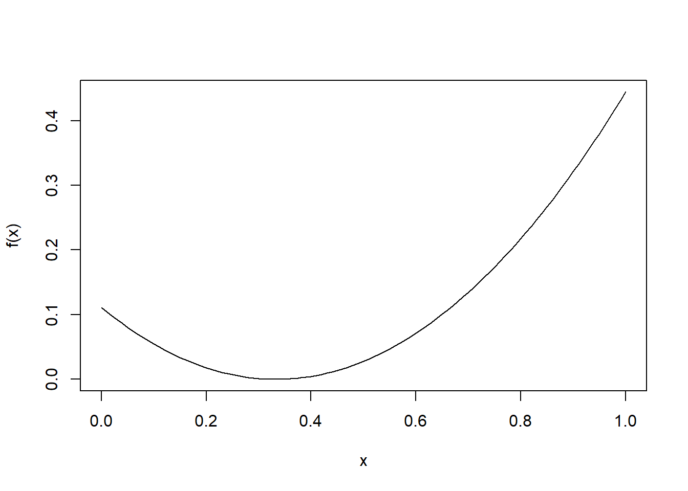
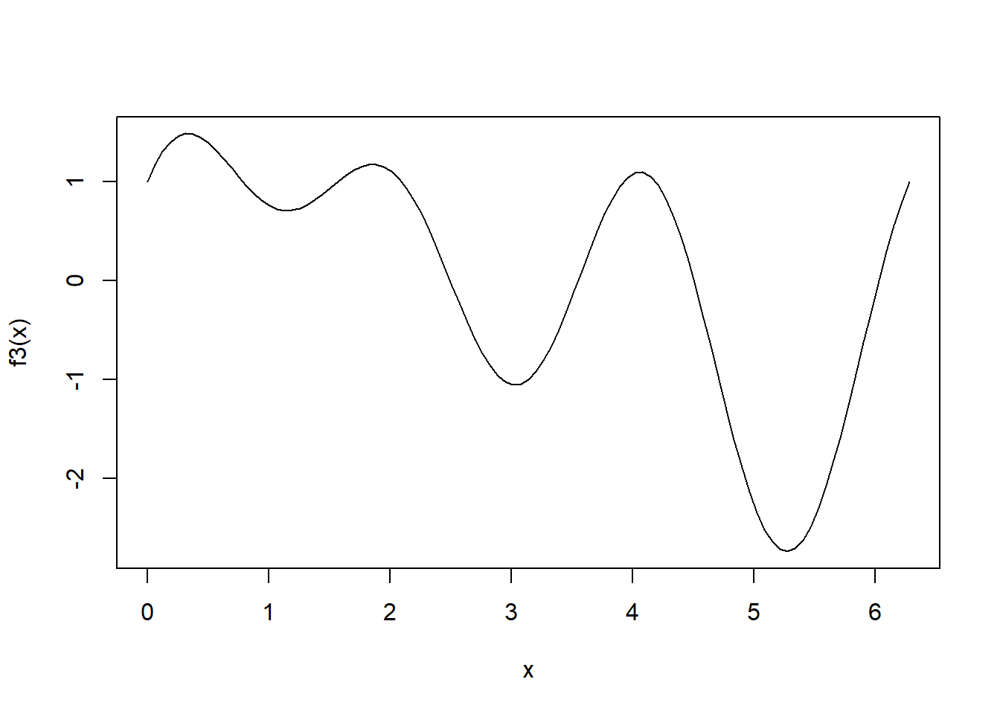
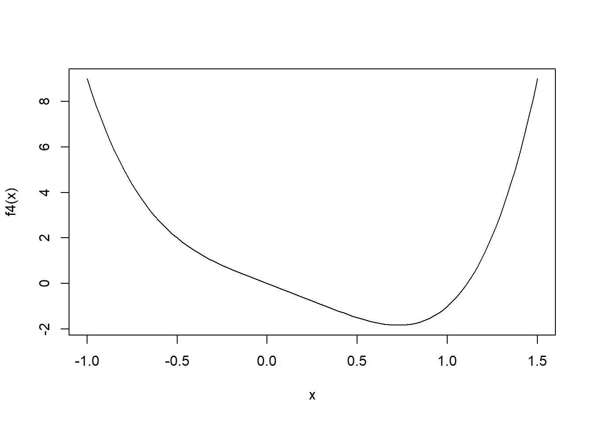
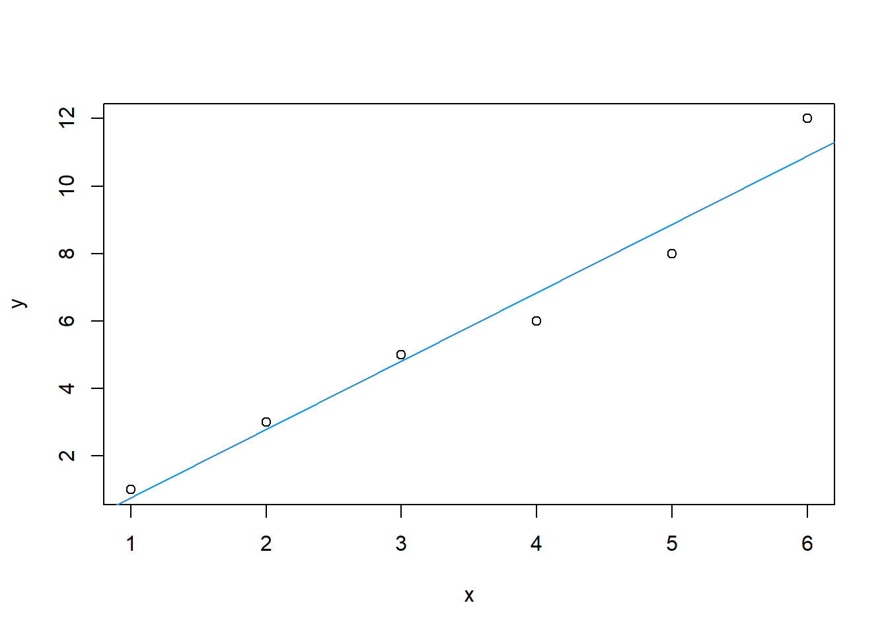

Bagian 9 Optimasi Secara Numerik
Optimasi merupakan suatu proses untuk mecari kondisi yang optimum, dalam arti paling maksimal, atau paling minimal. Optimasi dapat dilakukan dengan meminimumkan atau memaksimumkan suatu fungsi
9.1 Fungsi Kalkulus
9.1.1 Integral
Fungsi integral yang dapat digunakan pada R adalah integrate(fungsi, lower, upper). Selain itu, terdapat fungsi yac_str() pada package Ryacas untuk mencari integral tak tentu.
Contoh menggunakan fungsi integrate:
\[ \int x^2 dx \]
fs <- function (x)x^2
integrate(fs,0,1)## 0.3333333 with absolute error < 0.0000000000000037\[ \int x^2 +4x dx \]
f1 <- function(x) x^2 + 4*x
integrate(f1, lower=-10, upper=10)## 666.6667 with absolute error < 0.0000000000076\[ \int t^4 e^{-t} dt \]
f2 <- function(t)t^4 * exp(-t)
integrate(f2, lower=0, upper=Inf)## 24 with absolute error < 0.000022Contoh dengan fungsi yac_str pada paket Ryacas
library(Ryacas)\[ \int x^2 + 4xdx \]
yac_str("Integrate(x) x^2 + 4*x")## [1] "x^3/3+2*x^2"\[ \int t^4 e^{-t} dt \]
yac_str("Integrate(t) t^4 *Exp(-t)")## [1] "4*(3*((-2)*(t+1)*Exp(-t)-t^2*Exp(-t))-t^3*Exp(-t))-t^4*Exp(-t)"9.1.2 Diferensial
Untuk mendapatkan turunan dari suatu fungsi pada pemrograman R dapat menggunakan fungsi
D(expr, simbol): jika hasil turunan merupakan suatu fungsideriv(~fungsi, simbol): jika akan memasukkan nilai dari hasil turunan pada suatu fungsi
Contoh, akan dicari turunan dari fungsi berikut
\[ f(x) = \mathrm{exp}(x)^2 \]
xfs <- expression(exp(x^2))
D(xfs, "x")## exp(x^2) * (2 * x)\[ f(x) = x^2 \]
untuk nilai \(x=2\)
xturunan <- deriv(~x^2, "x")
x<-2
eval(xturunan)## [1] 4
## attr(,"gradient")
## x
## [1,] 49.2 Optimasi Numerik
9.2.1 Golden Section Search
Metode golden section search digunakan untuk mencari nilai minimum suatu fungsi yang dibatasi dari dua buah nilai, yaitu sebuah selang a dan b. Algoritma untuk teknik ini adalah sebagai berikut:
- Mulai dengan selang [a,b] yang memuat minimum
- Perkecil selang \([a’, b’]\) yang memuat minimum
- Berhenti sampai \(|b’ - a’|\) lebih kecil dari nilai toleransi
Pemilihan nilai \(a'\) dan \(b'\), adalah sebagai berikut
Nilai antara [a,b] memiliki sifat golden ratio
Tentukan \(x_1\) dan \(x_2\)
\(x_1 = b-(b-a)/\mathrm{goldenratio}\)
\(x_2 = a+(b-a)/\mathrm{goldenratio}\)
Hitung \(f(x_1)\) dan \(f(x_2)\)
Jika \(f(x_1) > f(x_2)\) maka \([a’, b’] = [x_1, b]\)
Jika \(f(x_1) < f(x_2)\) maka \([a’, b’] = [a, x_2]\)
Fungsi golden section
golden <- function (f, a, b, tol=0.0000001){
ratio <- 2 / ( sqrt (5)+1)
x1 <- b-ratio * (b-a)
x2 <- a+ratio * (b-a)
f1 <- f(x1)
f2 <- f(x2)
while ( abs (b-a)>tol){
if (f2>f1){
b <- x2
x2 <- x1
f2 <- f1
x1 <- b-ratio * (b-a)
f1 <- f(x1)} else {
a <- x1
x1 <- x2
f1 <- f2
x2 <- a+ratio * (b-a)
f2 <- f(x2)
}
}
return ((a+b) / 2)
}Contoh
\[ f(x) = |x -3.5| (x-2)^2 \]
# Membuat fungsi f(x)
f <- function(x) {abs(x-3.5)+(x-2)^2}
# Membuat plot
curve(f, 1,5)
# Menghitung nilai optimum
golden(f,1,2)## [1] 2golden(f,1,5)## [1] 2.5golden(f,3,5)## [1] 3\[ f(x) = 2\mathrm{sin}(x) - \frac{x^2}{10} \] Membuat fungsi \(f(x)\)
# Membuat fungsi f(x)
f <- function(x) {(2 * sin(x)) - ((x^2) /10)}
fa <- function(x) -1 * f(x) # fungsi dikali dengan -1 karena fungsi yang dibuat meminimumkan
# Membuat plot
curve(f, 0,4)
golden(fa,0,4)## [1] 1.4275529.2.2 Newton Raphson
Jika suatu fungsi memiliki turunan pertama dan kedua, maka nilai minimum dapat menggunakan metode Newton Raphson. Kelebihan metode ini adalah hanya memerlukan satu nilai untuk inisial. Kelemahannya adalah kita harus yakin f(x) memiliki turunan pertama dan turunan kedua. Jika di golden section tidak perlu ada turunan pertama dan turunan kedua.
Fungsi Newton Raphson
newtonr <- function (fx , x0 =1){
fx1 <- deriv (fx ,"x") # turunan pertama
fx2 <- deriv (D(fx ,"x"),"x") # turunan kedua
er <- 1000
while(er > 1e-6){
x <- x0
f1 <- attr ( eval (fx1),"gradient")[1]
f2 <- attr ( eval (fx2),"gradient")[1]
er <- abs(f1) # bisa juga e <- abs (x1 -x0)
x1 <- x0 - f1/f2
x0 <- x1
}
return (x1)
}Hitung nilai minimum untuk fungsi- fungsi berikut.
\[ f(x) = 4x^2 - 3x - 7 \]
fx <- expression(4*x^2-3*x-7)
newtonr(fx,3)## [1] 0.375\[ f(x) = e^{-x}+x^4 \]
fx <- expression(exp(-x)+x^4)
newtonr(fx)## [1] 0.5282519\[ f(x) = x^2 - x \]
fx <- expression(x^2-x)
newtonr(fx)## [1] 0.59.2.3 Fungsi Optimasi Build-in
Algoritma Nelder Mead adalah salah satu metode optimasi untuk fungsi yang memiliki lebih dari satu variabel. Di dalam R, fungsi optimasi dengan salah satu algoritma tersebut adalah
optimizeatauoptimiseuntuk menduga parameter/ mencari nilai minimum dari satu peubahoptimuntuk lebih dari satu peubah
9.2.3.1 Fungsi optimize/optimise
\[ f(x) = \left( x - \frac{1}{3} \right)^2 \]
f <- function(x) ((x-(1/3))^2) # membuat fungsi tujuan
curve(f)
xmin <- optimize(f, c(0,1), tol=0.0001) # tolerance optional
xmin## $minimum
## [1] 0.3333333
##
## $objective
## [1] 0Carilah titik maksimum dan minimum dari fungsi berikut:
\[ f(x) = \mathrm{sin}(x) + \mathrm{sin}(2x) + \mathrm{cos}(3x) \]
f3 <- function(x) sin(x) + sin (2*x) + cos(3*x)
curve(f3, from =0, to = 2* pi)
optimize(f3, interval = c(0, 2*pi)) #minimum lokal## $minimum
## [1] 3.033129
##
## $objective
## [1] -1.054505optimize(f3, interval = c(4, 2*pi)) #minimum global## $minimum
## [1] 5.273383
##
## $objective
## [1] -2.741405optimize(f3, interval = c(0, 2*pi), maximum = T) #maksimum lokal## $maximum
## [1] 4.0598
##
## $objective
## [1] 1.096473optimize(f3, interval = c(0, 1.5), maximum = T) #maksimum global## $maximum
## [1] 0.3323289
##
## $objective
## [1] 1.4858719.2.3.2 Fungsi optim
Digunakan untuk mencari nilai minimum dari fungsi yang lebih dari satu peubah. Contoh mencari nilai \(x_1\) dan \(x_2\), yang mebuat \(f(x_1,x_2) = 100(x_2 - x_1^2)^2 + (1-x_1)^2\)
fr <- function (x){ # tetap dituliskan dalam sebuah vektor, akan diduga x
x1<- x[1]
x2 <- x[2]
100 * (x2-x1^2)^2 + (1-x1)^2} # ini adalah nilai fungsi objetivenya
optim (c(-1.2,1),fr) # argumen pertama adalah nilai inisial, karena menduga x vektor berukuran 2 maka dimasukkan nilai inisialnya## $par
## [1] 1.000260 1.000506
##
## $value
## [1] 0.00000008825241
##
## $counts
## function gradient
## 195 NA
##
## $convergence
## [1] 0
##
## $message
## NULLoptim(par=2, fn=f3)## $par
## [1] 3.033154
##
## $value
## [1] -1.054505
##
## $counts
## function gradient
## 32 NA
##
## $convergence
## [1] 0
##
## $message
## NULLoptim(par=4, fn=f3)## $par
## [1] 5.273389
##
## $value
## [1] -2.741405
##
## $counts
## function gradient
## 32 NA
##
## $convergence
## [1] 0
##
## $message
## NULLJika akan mencari nilai maksimum, maka function dikali -1.
f3a <- function(x) -1 * f3(x)
optim(par=4, fn=f3a)## $par
## [1] 4.059814
##
## $value
## [1] -1.096473
##
## $counts
## function gradient
## 28 NA
##
## $convergence
## [1] 0
##
## $message
## NULLoptim(par=5.5, fn=f3a)## $par
## [1] 6.615576
##
## $value
## [1] -1.485871
##
## $counts
## function gradient
## 28 NA
##
## $convergence
## [1] 0
##
## $message
## NULLoptim(par=1, fn=f3a)## $par
## [1] 0.3323242
##
## $value
## [1] -1.485871
##
## $counts
## function gradient
## 32 NA
##
## $convergence
## [1] 0
##
## $message
## NULLFungsi polinomial
\[ f(x) = 4x^4 - 2x^3 - 3x \]
f4 <- function(x) 4*x^4-2*x^3-3*x
curve(f4, from = -1, to = 1.5)
optim(par = c(-0.5), fn = f4)## $par
## [1] 0.728418
##
## $value
## [1] -1.832126
##
## $counts
## function gradient
## 36 NA
##
## $convergence
## [1] 0
##
## $message
## NULL9.2.4 Metode Kuadrat Terkecil dengan Optim
Metode kuadrat terkecil pada regresi adalah mencari parameter \(\beta\) sehingga jumlah kuadrat sisaan adalah minimum. Jadi meminimumkan dari fungsi kuadrat sisaan. Sehingga objective function-nya adalah kuadrat sisaan.
f <- function (para,y,x){
X <- cbind (1,x)
yhat <- X %*% as.matrix(para)
sisa2 <- sum((y-yhat)^2) # kuadrat sisaan
return(sisa2) }# simulasi
x1 <- runif (10,1,10)
x2 <- runif (10,1,10)
galat <- rnorm (10,0,0.5)
y <- 1+2*x1+3*x2+galat # untuk menduga nilai betahasil <- optim (c(1,1,1),f,y=y,x= cbind (x1,x2))
hasil$par## [1] 1.622219 1.925578 2.984449lm(y~x1+x2)##
## Call:
## lm(formula = y ~ x1 + x2)
##
## Coefficients:
## (Intercept) x1 x2
## 1.622 1.926 2.984Contoh:
Lakukan pendugaan paramater regresi dengan meminimumkan jumlah kuadrat galat (residual sum of square) dari data berikut! Kemudian bandingkan hasilnya dnegan output fungsi lm!
| x | y |
|---|---|
| 1 | 1 |
| 2 | 3 |
| 3 | 5 |
| 4 | 6 |
| 5 | 8 |
| 6 | 12 |
data5=data.frame(x=c(1,2,3,4,5,6),
y=c(1,3,5,6,8,12))
JKG <- function(data, b) {
with(data, sum((b[1]+b[2]*x-y)^2))}
hasil1 <- optim(par = c(1,1), fn = JKG, data = data5)
hasil2 <- lm(y~x, data = data5)
plot(data5)
abline(hasil1$par,col=4)
hasil1$par## [1] -1.266302 2.028449hasil2$coefficients## (Intercept) x
## -1.266667 2.028571hasil1$value## [1] 2.819048sum(hasil2$residuals^2)## [1] 2.819048# Menggunakan fungsi LM
model1 <- lm(y~x, data=data5)
summary(model1)##
## Call:
## lm(formula = y ~ x, data = data5)
##
## Residuals:
## 1 2 3 4 5 6
## 0.2381 0.2095 0.1810 -0.8476 -0.8762 1.0952
##
## Coefficients:
## Estimate Std. Error t value Pr(>|t|)
## (Intercept) -1.2667 0.7815 -1.621 0.180388
## x 2.0286 0.2007 10.109 0.000539 ***
## ---
## Signif. codes: 0 '***' 0.001 '**' 0.01 '*' 0.05 '.' 0.1 ' ' 1
##
## Residual standard error: 0.8395 on 4 degrees of freedom
## Multiple R-squared: 0.9623, Adjusted R-squared: 0.9529
## F-statistic: 102.2 on 1 and 4 DF, p-value: 0.0005399.2.5 MLE (Maximum Likelihood Estimator)
Metode ini adalah metode yang paling sering digunakan untuk menduga parameter sebaran. Mencari nilai maksimum dari suatu fungsi tujuan yang berupa fungsi likelihood-nya. Untuk mendapatkan likelihood merupakan perkalian dari fungsi sebaran, lebih mudah menduga teta dengan mentransformasi fungsi likelihood menjadi negatif log likelihood
Sebagai contoh, jika \(x_1, x_2, ..., x_n\) berasal dari peubah acak \(X \sim N(\mu, \sigma)\), tentukan penduga \(\mu\) dan \(\sigma\) menggunakan MLE. Jika log likehood saja meminimumkan, maka menjadi negatif log likelihood suapaya dimaksimumkan.
negloglik <- function (para,xd){
nilai <- -1* sum (dnorm (xd, mean =para[1], sd=para[2], log= TRUE)) # penjumlahan fungsi likelihood distribusi normal
return (nilai)
}
x <- rnorm (10,2,5)
hasil <- optim (c(1,1),negloglik,xd=x)
cat ("Hasil MLE:", hasil $par)## Hasil MLE: 0.1836094 4.720975c(mean(x), sd(x)) # pembanding## [1] 0.1854109 4.9775375Pendugaan untuk regresi linear dengan menggunakan metode kemungkinan maksimum.
Sebagai contoh, akan diduga parameter dari regresi linear sederhana dengan menggunakan MLE. Contoh soal sebelumnya akan digunakan kembali.
x <- matrix(c(1,2,3,4,5,6))
y <- matrix(c(1,3,5,6,8,12))
X <- cbind(1,x) # membuat maxtrix [1 x1]Fungsi log likelihood dari Regresi Linear Sederhana adalah sebagai berikut:
\[ \mathrm{log}L(\beta_0, \beta_1, \sigma^2) = -\frac{n}{2}\mathrm{log}(2\pi) - \frac{n}{2}\mathrm{log}(\sigma^2) - \frac{1}{2\sigma^2}\sum_{i=1}^n (y_i - \beta_0 - \beta_1x_i)^2 \]
Cara pertama:
regloglik <- function (beta, y, X) {
n <- nrow(X) # jumlah baris pada matrix x
k <- ncol(X) # jumlah kolom pada matrix x
beta0 <- beta[1]
beta1 <- beta[2]
var.lin <- beta[3]
e <- y - X %*% beta[1:2] # menghitung sisaan
logl <- -0.5*n*log(2*pi) - 0.5*n*log(var.lin) - ((t(e)%*%e)/(2*var.lin))
return(-logl)
}par.reg <- optim(c(1,1,1), regloglik, y=y, X=X)
par.reg$par## [1] -1.2669724 2.0286218 0.4698408Cara kedua:
regloglik <- function (para,y, x){
# fungsi terdiri dari 3 parameter dalam argumen para
# beta0 = para [1]
# beta1 = para [2]
# sigma = para [3]
# nilai tengah dari regresi linear adalah beta0 + b1x1
# standar deviasi adalah sigma
nilai <- -1* sum (dnorm (y, mean =para[1]+ x*para[2], sd=para[3], log= TRUE))
return (nilai)
}
x=c(1,2,3,4,5,6)
y=c(1,3,5,6,8,12)
hasil <- optim (c(1,1,1),regloglik,y =y, x=x)
cat ("Hasil MLE:", hasil $par)## Hasil MLE: -1.266469 2.028513 0.6853899Ref (Raharjo 2021a) (Soleh 2021a) (Rahmi 2021a)